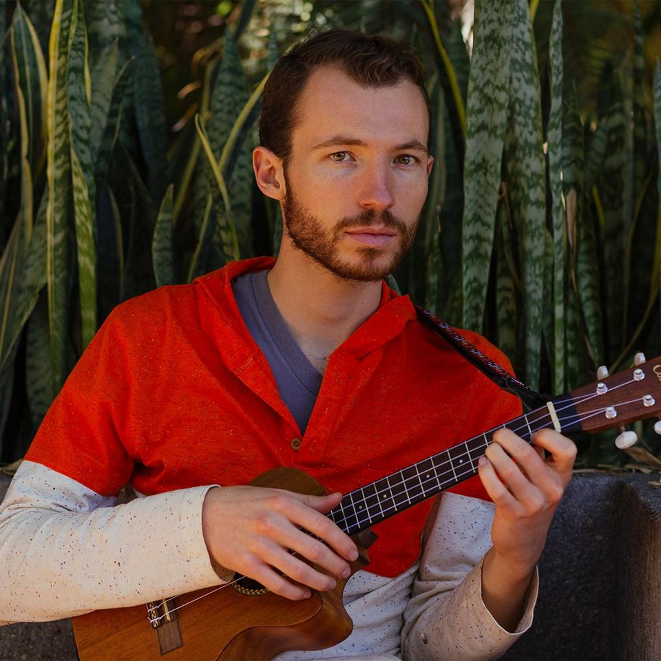

¡Hola!
Te doy la bienvenida a mi web oficial
Soy un músico e idealista originario de Cholula, México. Entiendo el mundo a través de la música, la cual ha sido mi idioma desde siempre. Aunque me formé como baterista, encontré en el ukulele al aliado perfecto para expresar las inquietudes de mi alma con sinceridad. Soy un enamorado de la vida, la naturaleza y los animales (herbívoro de corazón). Creo firmemente en el optimismo activo y en nuestra responsabilidad de construir un mundo más amable, diverso y en paz. Me defino como un eterno aprendiz que fluye y se reinventa constantemente para entender los misterios de la existencia.